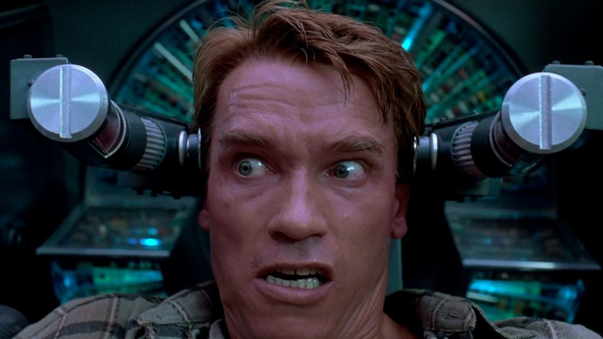

16Nov
Total Recall
Ah bizi bu kadar paranoyak yapmanıza gerçekten gerek var mıydı? Kendi paramızla rezil oluyoruz vallahi. Tek istediğimiz hayallerimizin bir kısmını satın almaktı.
devamını okuBu tür için tüm filmler aşağıda listelendi. (10)
Ah bizi bu kadar paranoyak yapmanıza gerçekten gerek var mıydı? Kendi paramızla rezil oluyoruz vallahi. Tek istediğimiz hayallerimizin bir kısmını satın almaktı.
devamını okuKoca insanlık tarihi, bazı erkekler arasındaki romantik bağları görmezden gelerek geçti. Viva la Bromance!
devamını oku
Akıllı bir adam, aynı zamanda iyi kılıç kullanan bir samuraysa gittiği her yerde ayakta kalmasını bilir. Gittiği yerin ikiye bölünmüş bir savaş ortamı olması tam aradığı şeydir. Böyle bir kriz ortamında çok para kazanır akıllılar. Ama akıllı bir samurayın paradan daha fazla değer verdiği şeyler vardır.
devamını okuKocaman, pis, güçlü bir TIR ve yüzünü hiç göremediğimiz şoförü. Böyle bir düşman, uzun bir yola çıktıysanız isteyeceğiniz son şeydir ve başka hiçbir şey sizi daha fazla tedirgin edemez. Kavga ettiğiniz eşiniz ve hatta akşam misafirliğe gelecek olan kaynanası bile.
devamını okuDemolition Man, Stallone'nin gelmiş geçmiş en akılcı öğüdünü içeriyor. Değişiklik için çoklarının kirlenmesine, görmezden gelinenlerin de biraz temizlenmesine ihtiyaç var. Gerisini de siz halledersiniz işte...
devamını okuAcıkmış zombilerin kol gezdiği aksiyon filmlerinin hepsinde mutantlarımız birbirini andırır. Fakat onlarla mücadele edenler her filmde aynı olacak diye bir kural yoktur. Bu filmde alışılmışın aksine Avrupa’da, Fransızların zombilerle nasıl başa çıkmaya çalıştığına tanık oluyoruz.
devamını okuBirincinin amacı yerini ikinciden korumak, ikincinin kaderi ise, birinci olana kadar bütün geri kalanla savaşmaktır.
devamını okuTetikçilik çok uzun süredir var olan bir meslek. Gelecekte bitirirlerse, kötüler de tetikçileri geçmişten kiralarlar belki.
devamını okuKimin dost kimin düşman olduğunu anlayamayacağın gibi, kimlerin sana zarar vermek istediğine de asla emin olamazsın.
devamını oku
Dijital dünyanın genişlemiş arkadaş grubu: Müzik, film ve yeni dostları dijital oyunlar.
devamını oku